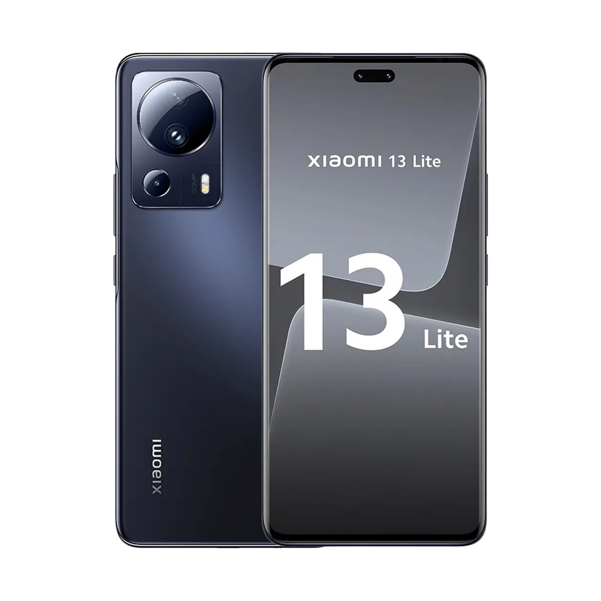
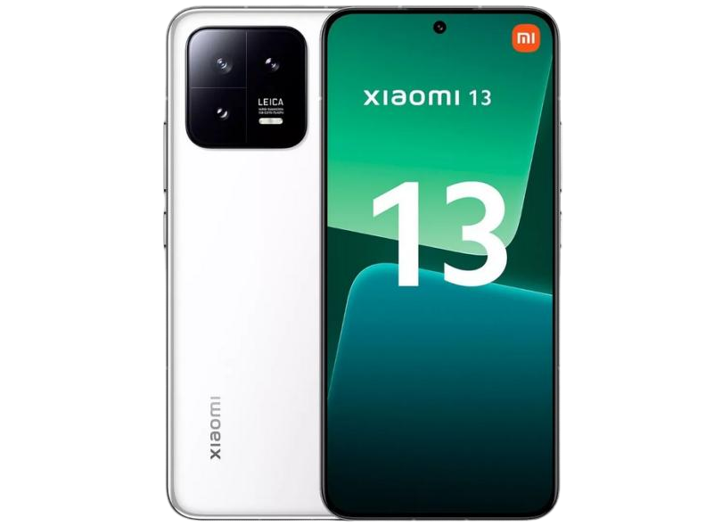

A procura pelos melhores celulares da Xiaomi têm crescido entre os brasileiros. Os modelos da marca ganharam grande popularidade nos últimos anos por aliarem preço atrativo a bom desempenho, sendo interessantes para usuários que querem performance de ponta, mas não estão dispostos a desembolsar o valor pedido em smartphones top de linha de marcas como Samsung ou Apple. Os modelos vão desde o Poco X5 Pro, com preço menor e bom custo-benefício, até o Xiaomi 13 Pro e 12S Ultra, com processamento mais robusto e câmeras desenvolvidas em parceria com a Leica.
Vale destacar que nem todos os modelos listados foram lançados oficialmente no Brasil, mas é possível encontrá-los em importadoras no mercado online. No entanto, ao efetuar a compra, é crucial estar atento ao fato de que a Xiaomi não fornece nenhum tipo de garantia para produtos não-oficiais. Confira abaixo seis modelos poderosos da gigante chinesa para todos os bolsos.
Celulares da Xiaomi barato?
Veja as 6 opções de até R$ 2.000 para
quem quer economizar

Xiaomi Poco X5 Pro - a partir de R$ 1.771
O Xiaomi Poco X5 Pro é um smartphone com bom custo-benefício que entrega desempenho satisfatório. O aparelho tem tela AMOLED de 6,67 polegadas, com resolução Full HD e taxa de atualização de 120 Hz. Para completar a experiência de imagem, há suporte às tecnologias Dolby Vision e HDR 10 +. O painel ainda é revestido com Gorilla Glass 5, que garante boa resistência a quedas.
Além de consumo de entretenimento, o aparelho também pode agradar quem pretende usá-lo para jogos, graças ao processador Snapdragon 778G e aos 8 GB de RAM. Para o armazenamento, há duas opções: 128 GB ou 256 GB de memória.
Xiaomi Redmi Note 12 Pro 5G - a partir de R$ 1.842
O Redmi Note 12 Pro é um clássico Xiaomi: um aparelho intermediário com bom custo-benefício e hardware competitivo. O modelo possui tela OLED de 6,67 polegadas, com taxa de atualização de 120 Hz e proteção Gorilla Glass 5. Sua bateria é de 5.000 mAh, e ele vem com carregador de 67 W, que permite carregamento completo em menos de uma hora.
O responsável pelo desempenho do smartphone é o processador Dimensity 1080, da MediaTek, que trabalha com até 12 GB de RAM. Há duas opções de armazenamento: 128 GB ou 256 GB. O conjunto de câmeras do Redmi Note 12 Pro conta com sensor principal de 50 MP, ultrawide de 8 MP e macro de 2 MP, além de uma lente frontal de 16 MP. O aparelho pode ser encontrado por a partir de R$ 1.842 na Amazon.

Xiaomi 13 Lite a partir de R$ 2.449
Apesar de ser uma versão mais em conta do Xiaomi 13, o Xiaomi 13 Lite é um aparelho que se destaca pelo seu desempenho. O modelo possui tela AMOLED de 6,55 polegadas e resolução de 2.400 x 1.080 pixels. O processamento do Xiaomi 13 Lite fica a cargo do Snapdragon 7 Gen 1, que trabalha em conjunto com 8 GB de memória RAM. São duas opções de armazenamento: com 128 GB ou 256 GB.
O celular é leve, com 171 gramas, e fino, com 7,23 de espessura, e conta com bordas curvas que trazem beleza ao seu design. Além disso, o modelo vem com Android 12 e certificação IP53, que garante resistência à poeira e gotas d’água. A bateria é de 4.500 mAh, o que deve ser suficiente para um dia de uso, e o aparelho vem com um carregador turbo de 67 W, que promete carga completa em até 40 minutos. É possível encontrar o Xiaomi 13 Lite por a partir de R$ 2.449.

Xiaomi POCO F5 Pro a partir de R$ 3.329
O Poco F5 Pro é outro celular Xiaomi muito potente, principalmente quando focamos nos seus componentes de hardware. O modelo tem tela AMOLED de 6,67 polegadas e resolução Quad HD+, com taxa de atualização de 120 Hz, Dolby Vision e proteção Gorilla Glass 5. A bateria do celular é de 5.160 mAh, com carregador de 67 W que repõe metade da carga em 15 minutos. O modelo também pode ser carregado sem fio, mas com potência de até 30 W.
O smartphone vem com o potente Snapdragon 8 Plus Gen 1, que trabalha com até 12 GB de RAM e armazenamento de 256 ou 512 GB. Quanto às câmeras, há um sensor principal de 64 MP, um ultrawide de 8 MP e outro macro de 2 MP – além da câmera frontal de 16 MP. O smartphone é compatível com 5G e roda Android 13. A fabricante chinesa promete duas atualizações de software e updates de segurança, garantindo de dois a três anos de vida útil. O POCO F5 Pro pode ser encontrado por a partir de R$ 3.329.
Xiaomi 12S Ultra a partir de R$ 4.283
O Xiaomi 12S Ultra é o modelo premium da gigante chinesa lançado no segundo semestre de 2022. O smartphone consagra a parceria da marca com a empresa de câmeras alemã Leica, conferindo maior qualidade ao conjunto fotográfico da Xiaomi. No caso do 12S Ultra, isso se traduz em uma câmera principal de 50 MP, com sensor Sony IMX 989 de uma polegada; ultrawide e teleobjetivas potentes com 48 MP; e sensor frontal de 32 MP. O resultado são fotos com qualidades impressionantes em todas as suas lentes.
O aparelho conta com o poderoso processador Snapdragon 8 Plus Gen 1, até 12 GB de RAM e armazenamento de 256 GB ou 512 GB. Sua tela é de 6,73 polegadas com resolução Quad HD+ e brilho de 1.500 nits. O telefone tem bateria de 4.860 mAh e compatibilidade com a rede 5G. Ele vem com Android 12 sob a interface MIUI 13, própria da Xiaomi. O aparelho não foi lançado oficialmente no Brasil, mas pode ser encontrado no mercado online por a partir de R$ 4.283.
Xiaomi 13 Pro a partir de R$ 7.562
O Xiaomi 13 Pro é outro modelo premium lançado em dezembro do ano passado. O aparelho vem com algumas configurações que o tornam um dos melhores celulares da fabricante chinesa. Entre elas estão o potente processador Snapdragon 8 Gen 2, que trabalha com memória RAM de 12 GB e armazenamento de 256 GB ou 512 GB. Outro destaque é a bateria de 4.820 mAh e o carregador 120 W, que carrega de 0 a 100% em 19 minutos. A tela é AMOLED de 6,73 polegadas e resolução WQHD+ (3.200 x 1.400 pixels).
De todos os aspectos, entretanto, o conjunto de câmeras é o que chama mais atenção. A Xiaomi firmou parceria com a marca de câmeras Leica no processo de criação, e o resultado foi uma lente principal com sensor de 1 polegada de 50 MP, além de uma ultrawide e outra teleobjetiva com também 50 MP. Há ainda uma câmera frontal de 32 MP. O 13 Pro roda Android 13, tem certificação IP68, acabamento em cerâmica na traseira e pode ser encontrado por a partir de R$ 7.562.
